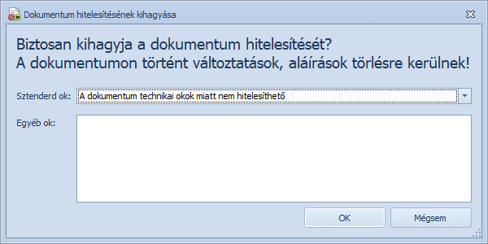

Amennyiben a kötegben olyan iratot találunk, melyet nem lehet hitelesíteni, de nem is szeretnénk módosítani, vagy javításra küldeni, akkor a hitelesítés kihagyását ebben az ablakban kell megindokolni.

Dokumentum elutasítása ablak
Az ablakban kötelező megadni az elutasítás okát. Az okot kétféleképpen adhatjuk meg:
Figyelem! Kihagyást követően a dokumentumon tett aláírások és változások (oldalak forgatása, törlése) visszavonásra kerülnek!